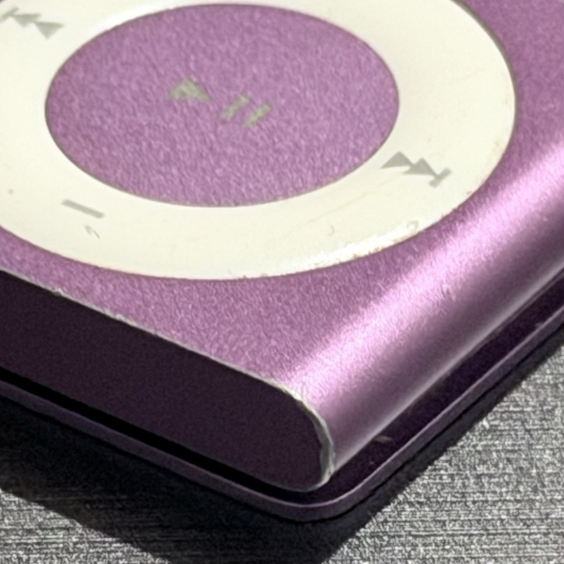
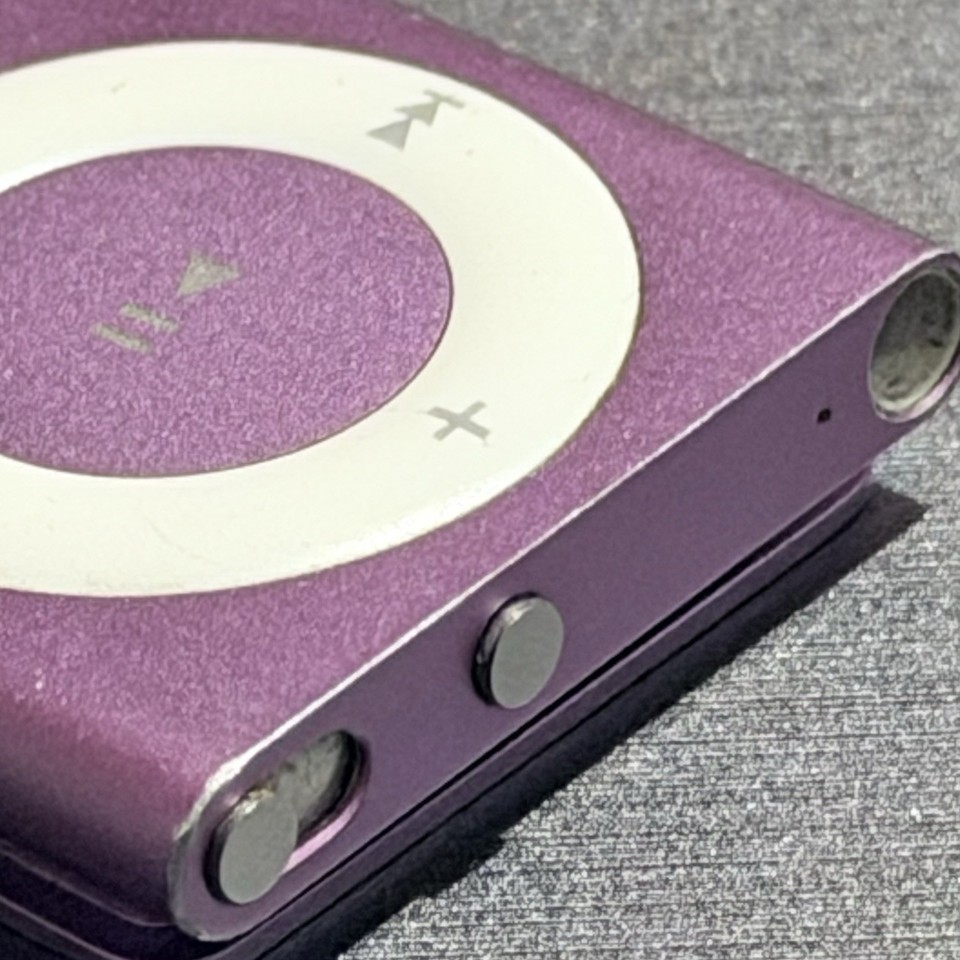

iPod shuffle 4th Generation (Late 2012) -Purple
Sold 2026-11-21
£21.50
- Series
- iPod
- Model
- iPod shuffle 4th Generation
- Condition
- Very Good
- Storage
- 2GB
Apple iPod Shuffle 4th Generation 2GB Purple Late 2012 A1373 Tested
Condition: Used — Very Good
Apple iPod Shuffle 4th Generation in Purple from the Late 2012 range.
A compact classic Apple music player featuring 2GB of storage and physical playback controls.
Condition
* Good overall cosmetic condition * Appears in very good condition from afar, although slight cosmetic damage becomes more apparent upon closer inspection * Slight wear and tear towards the edges of the device * Light scratching on the control wheel * Scratches on the Apple logo * Minor signs of previous use * Fully tested and working * Battery holds a reasonable charge * Minor marks consistent with age
Specifications
* Manufacturer: Apple * Model: iPod Shuffle * Generation: 4th Generation * Model number: A1373 * Storage: 2GB * Colour: Purple * Release period: Late 2012
Included
* Apple iPod Shuffle * Third-party charging cable
⸻
Please see the photographs and item contents section for the exact condition
View condition, testing & repairs report (PDF) ↗︎
This listing has been archived.